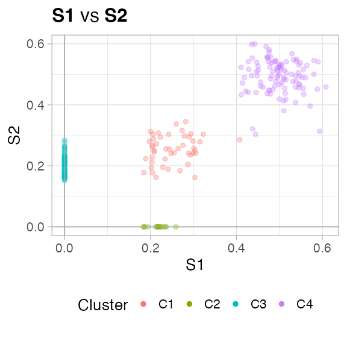
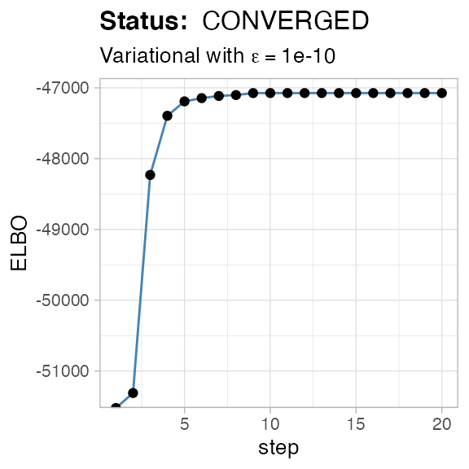
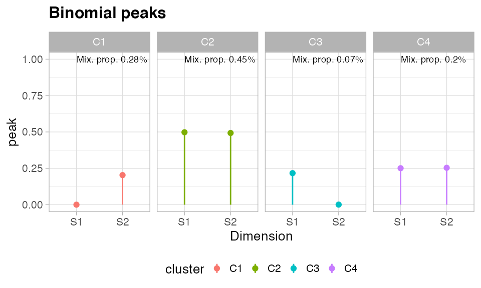
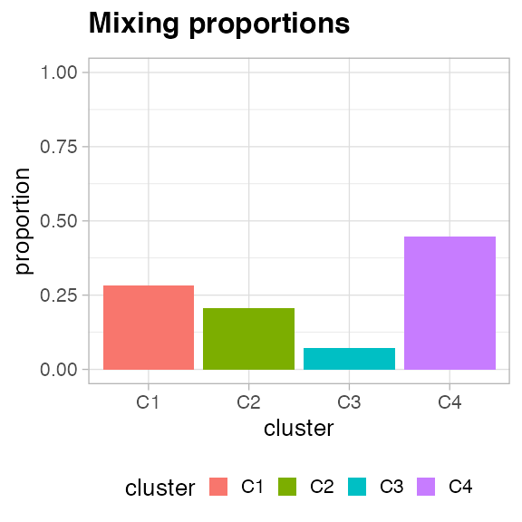
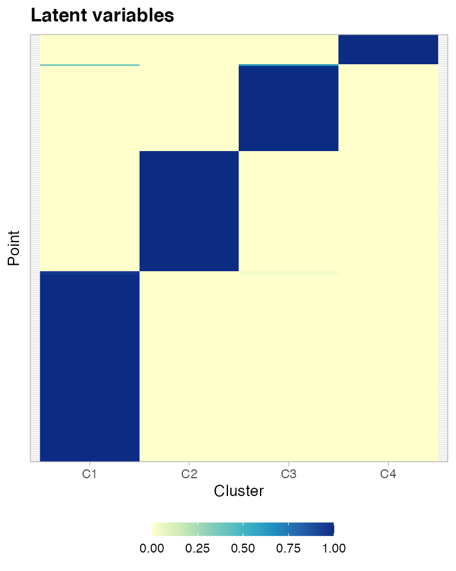

To run the fit you need 2 tibbles (or matrices), with equal dimensions and matched column names. One tibble contains the counts of the successful Bernoulli trials, the other contains the count of all the attempted trials.
In the package we provide mvbmm_example, a dataset which shows the input format.
data("mvbmm_example")The format is (S1 and S2 are the dimensions)
mvbmm_example$successes
#> # A tibble: 231 × 2
#> S1 S2
#> <dbl> <dbl>
#> 1 44 39
#> 2 38 57
#> 3 45 54
#> 4 56 56
#> 5 54 56
#> 6 60 44
#> 7 53 46
#> 8 53 55
#> 9 56 53
#> 10 53 60
#> # … with 221 more rowsYou can fit the model with the variational_fit function, which is quite well documented
??variational_fitYou have control over several parameters. Concerning the mixture type you can set the following
K, the maximum number of clusters returnedalpha_0, the concentration parameter of the Dirichlet mixture.a_0 and b_0, the prior Beta hyperparameter for each Binomial componentConcerning the variational optimization you can set the following
max_iter, the maximum number of fit iterationsepsilon_conv, the epsilon to measure convergence as ELBO absolute differencesamples, the number of fits computed.The fitting engine makes use of the easypar package to run in parallel the required number of fits. The default is multi-core implementation that uses 80% of the available cores; you can disable parallel runs and execute sequential turning off easypar, as explained in its Wiki.
We run the fit with default parameters, the output model is print to screen.
fit = variational_fit(
mvbmm_example$successes,
mvbmm_example$trials
)
#> [ VIBER - variational fit ]
#>
#> ℹ Input n = 231, with k < 10. Dirichlet concentration α = 1e-06.
#> ℹ Beta (a_0, b_0) = (1, 1); q_i = prior. Optimise: ε = 1e-10 or 5000 steps, r = 10 starts.
#> ✔ VIBER fit completed in 0.09 mins (status: converged)
#> ── [ VIBER ] My VIBER model n = 231 (w = 2 dimensions). Fit with k = 10 clusters
#> • Clusters: π = 45% [C1], 28% [C6], 20% [C8], and 7% [C5], with π > 0.
#> • Binomials: θ = <0.5, 0.49> [C1], <0, 0.2> [C6], <0.25, 0.25> [C8], and <0.22,
#> 0> [C5].
#> ℹ Score(s): ELBO = -47073.332. Fit converged in 19 steps, ε = 1e-10.Because the model is semi-parametric, it will attempt to use at most K Binomial clusters. However, most of those clusters might be not interesting and you might want to filter them.
VIBER implements 2 possible filters which are available in function choose_clusters.
Adter filtering, output clusters will be renamed by size (C1 will be larger etc.), and the latent variables and hard clustering assignments will be updated accordingly.
Here we require only the minimum cluster size to be 2% of the total number of points.
fit = choose_clusters(fit,
binomial_cutoff = 0,
dimensions_cutoff = 0,
pi_cutoff = 0.02)
#> ✔ Reduced to k = 4 (from 10) selecting VIBER cluster(s) with π > 0.02, and Binomial p > 0 in w > 0 dimension(s).The new model has fewer clusters
fit
#> ── [ VIBER ] My VIBER model n = 231 (w = 2 dimensions). Fit with k = 4 clusters.
#> • Clusters: π = 45% [C1], 28% [C3], 20% [C4], and 7% [C2], with π > 0.
#> • Binomials: θ = <0.5, 0.49> [C1], <0, 0.2> [C3], <0.25, 0.25> [C4], and <0.22,
#> 0> [C2].
#> ℹ Score(s): ELBO = -47073.332. Fit converged in 19 steps, ε = 1e-10.You can plot the data - one dimension against the other - with the plot_2D (for instance, trye plot_2D(fit, d1 = 'S1', d2 = 'S2')), or use the S3 function plot(fit) to compute a list of plots for each pair of dimensions in the mixture.
plot(fit)
#> Warning: The `x` argument of `as_tibble.matrix()` must have unique column names if `.name_repair` is omitted as of tibble 2.0.0.
#> Using compatibility `.name_repair`.
#> This warning is displayed once every 8 hours.
#> Call `lifecycle::last_lifecycle_warnings()` to see where this warning was generated.
#> [[1]]
You can plot the ELBO
plot_ELBO(fit)
You can plot the Binomial peaks, per cluster and per dimension
plot_peaks(fit)
You can plot the mixing proportions of the mixture

And, finally, you can plot the latent variables of the mixture
